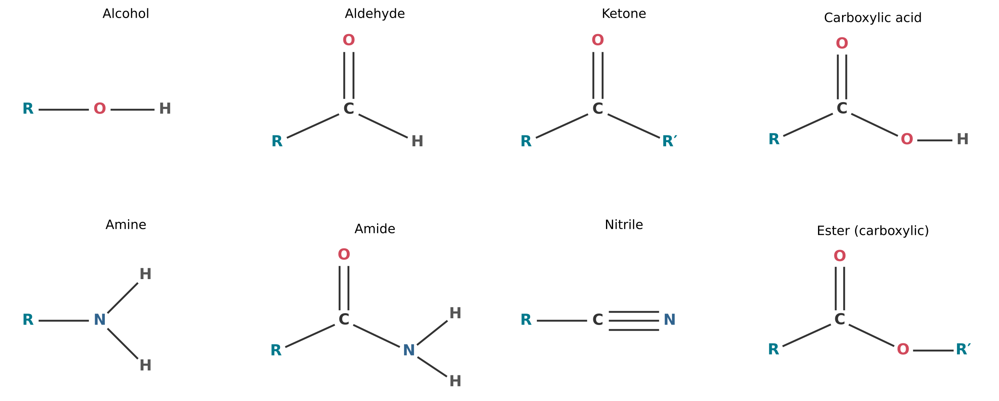
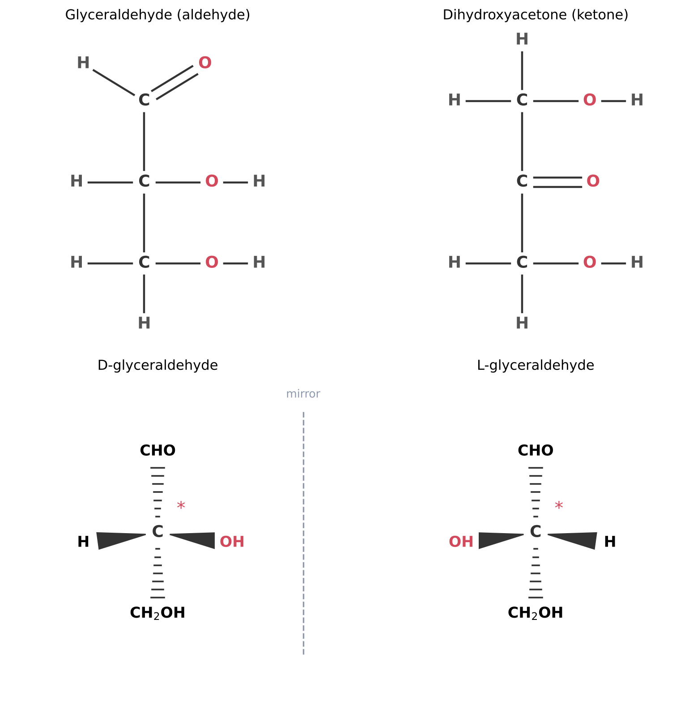
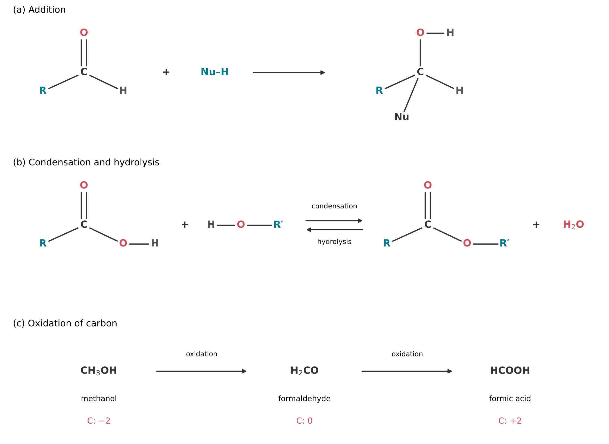
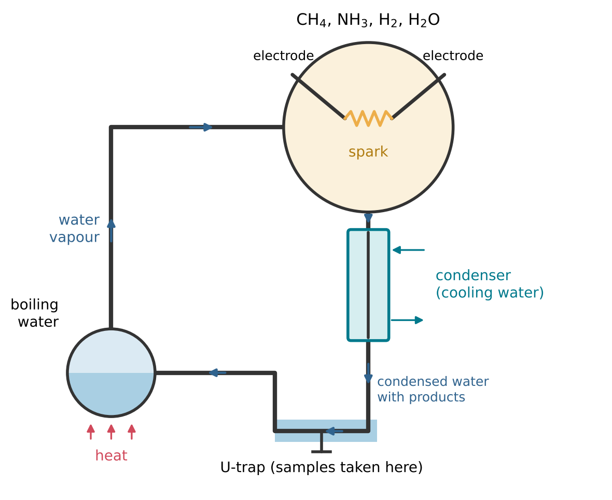
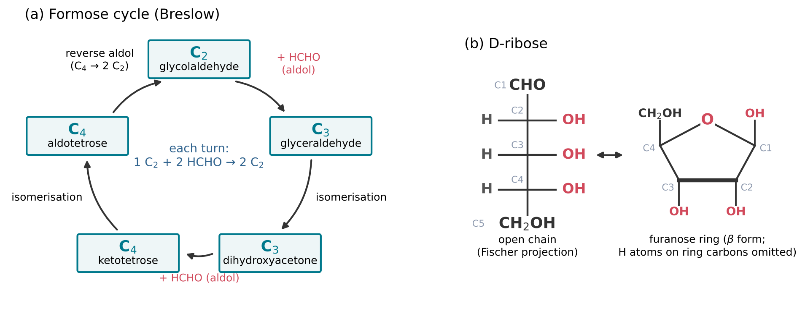
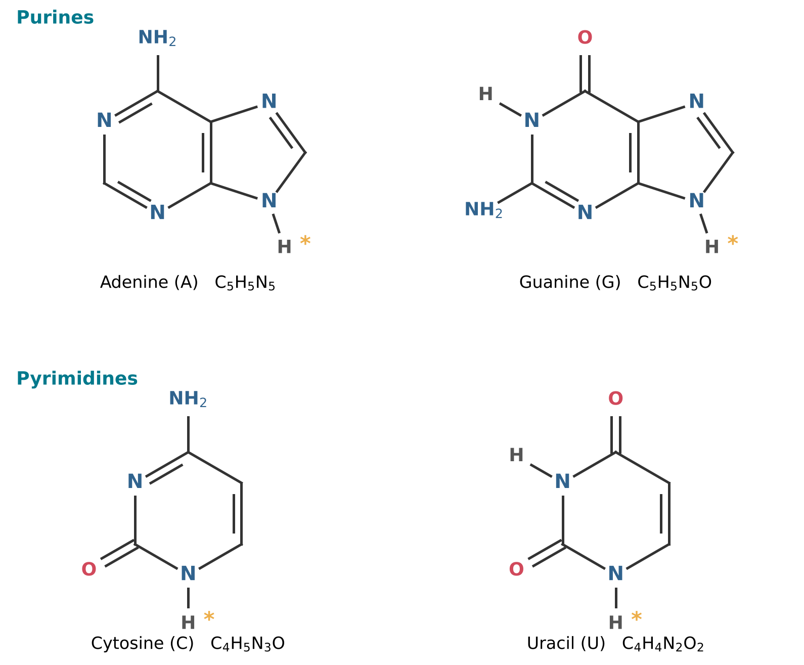
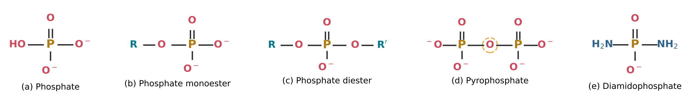
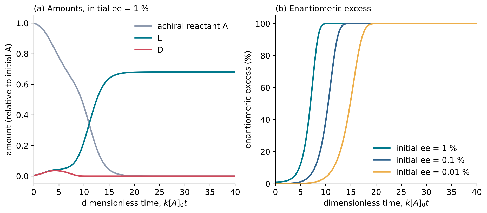

4 From Simple Molecules to Building Blocks
Learning objectives
After reading this chapter you should be able to:
- Recognise the functional groups that occur in the building blocks of RNA, and describe the main types of reaction that transform them.
- Describe the Miller-Urey experiment and later work on the synthesis of organic molecules from simple gases, and evaluate what these experiments show.
- Explain how sugars, including ribose, can be formed from formaldehyde, and why the selective formation of ribose is difficult.
- Explain how nucleobases can be formed from hydrogen cyanide and related molecules, and why the activation of phosphate is necessary.
- Explain why prebiotic reactions generally give mixtures rather than single products, and how selectivity might arise.
4.1 Functional groups
Skeletons and functional groups
The molecules of Chapter 3 contain at most a few atoms. The building blocks of RNA are larger: the sugar ribose has 20 atoms and the nucleobase adenine 15. To describe such molecules, chemists divide them into parts. An organic molecule is regarded as consisting of a relatively unreactive skeleton, for example a chain of carbon atoms joined by single bonds, to which one or more functional groups are attached. A functional group is an atom, or a group of atoms, that has similar chemical properties whenever it occurs in different compounds, and it determines the characteristic physical and chemical properties of the family of compounds that contain it (IUPAC, n.d.h).
This division is useful because the reactions of a molecule are, to a good approximation, the reactions of its functional groups. Once the behaviour of a few functional groups is known, the behaviour of a large number of molecules can be predicted. In what follows, the letter R stands for the rest of the molecule, a carbon-containing group whose details do not matter for the reaction under discussion.
The functional groups of this book
Table 4.1 lists the functional groups that occur in the building blocks of RNA and in their precursors. Their structures are shown in Figure 4.1.
| Family | Functional group | General formula | Example |
|---|---|---|---|
| Alcohol | Hydroxy group, –OH | R–OH | Hydroxy groups of ribose |
| Aldehyde | Carbonyl group with one H | R–CHO | Formaldehyde, glycolaldehyde |
| Ketone | Carbonyl group between two carbons | R–CO–R\('\) | Dihydroxyacetone |
| Carboxylic acid | Carboxy group, –COOH | R–COOH | Glycine (an amino acid) |
| Amine | Amino group, –NH2 | R–NH2 | Amino group of adenine |
| Amide | Carbonyl bonded to nitrogen | R–CO–NH2 | Formamide |
| Nitrile | Cyano group, –C\(\equiv\)N | R–C\(\equiv\)N | Cyanamide, cyanoacetylene |
| Ester | Acid joined to an alcohol with loss of water | R–CO–O–R\('\); (RO)2P(=O)OH | Phosphate esters of RNA |

The groups are described below.
- Alcohols are compounds in which a hydroxy group, –OH, is attached to a carbon atom that forms only single bonds (IUPAC, n.d.a). The O–H bond is polar (Section 2.4), so hydroxy groups form hydrogen bonds with water and with one another (Section 2.5). Ribose carries several hydroxy groups, which is why it dissolves readily in water.
- The carbonyl group consists of a carbon atom double-bonded to an oxygen atom, C=O. Because oxygen is more electronegative than carbon, the carbon atom carries a partial positive charge, and this is the site at which carbonyl compounds react with electron-rich species. In an aldehyde, the carbonyl carbon is bonded to one hydrogen atom and to one R group, RC(=O)H (IUPAC, n.d.b); formaldehyde, H2CO, is the special case in which R is a second hydrogen atom. In a ketone, the carbonyl carbon is bonded to two carbon atoms.
- A carboxylic acid contains the carboxy group, –COOH, in which a carbonyl group and a hydroxy group are attached to the same carbon atom. The hydrogen of the hydroxy group can be released as H+ in water (Section 2.6), leaving the carboxylate ion –COO−.
- An amine contains a nitrogen atom bonded to one or more carbon atoms and carrying a lone pair (Section 2.2); the simplest form is the amino group, –NH2. The lone pair can accept a proton, so amines are bases.
- An amide is formally derived from an acid by replacing a hydroxy group of the acid with an amino or substituted amino group (IUPAC, n.d.c). In a carboxylic amide, the carbonyl group is therefore bonded directly to nitrogen, –CO–NH2. Formamide, HCONH2, the simplest amide, is a starting material for the synthesis of nucleobases (Section 4.5).
- A nitrile contains a carbon atom triple-bonded to nitrogen, –C\(\equiv\)N, the group present in HCN and cyanamide (Section 3.6).
- An ester is formally derived from an acid and an alcohol by linking them with the loss of water, from a hydroxy group of the acid and the hydroxy group of the alcohol (IUPAC, n.d.g). The acid need not be a carboxylic acid: phosphoric acid forms phosphate esters, and it is through phosphate ester linkages that the units of RNA are joined into a chain (Chapter 6).
Isomers
Molecules with the same molecular formula can have different structures. Isomers are species that have the same atomic composition (molecular formula) but different arrangements of their atoms, and hence different physical or chemical properties (IUPAC, n.d.i). For example, glyceraldehyde and dihydroxyacetone both have the formula C3H6O3. In glyceraldehyde the carbonyl group is at the end of the carbon chain, so the molecule is an aldehyde; in dihydroxyacetone it is in the middle, so the molecule is a ketone (Figure 4.2). Isomers of this kind, which differ in the order in which atoms are bonded, are called structural isomers.
Ribose has the formula C5H10O5, and many other sugars share this formula. The problem of forming ribose rather than one of its isomers is central to Section 4.4.
Chirality
A second kind of isomerism arises from the three-dimensional arrangement of atoms. An object is chiral if it cannot be superposed on its mirror image (IUPAC, n.d.d). In molecules, chirality most often arises from a carbon atom bonded to four different groups. Such a carbon atom is called a stereocentre. Because the four bonds point to the corners of a tetrahedron (Section 2.3), the four groups can be arranged in two ways that are mirror images of each other and cannot be interconverted without breaking bonds (Figure 4.2).
Two molecules that are non-superposable mirror images of each other are called enantiomers. Enantiomers have identical physical properties, such as melting point and solubility, except in their interaction with other chiral objects, including polarised light and other chiral molecules. Glyceraldehyde has one stereocentre, its central carbon atom, and therefore exists as two enantiomers, designated D and L. Ribose has three stereocentres in its open-chain form, and the ribose in RNA is exclusively D-ribose. A chemical synthesis from achiral starting materials such as formaldehyde gives equal amounts of the two enantiomers, a mixture called a racemate. How the uniform chirality of biological molecules arose is one of the open questions discussed in Section 4.7.

4.2 Reaction types
Nucleophiles and electrophiles
Most of the reactions in this book involve the formation of a new covalent bond in which both bonding electrons come from one of the two partners. The partner that supplies the electron pair is the nucleophile, and the partner that accepts it is the electrophile. An electrophile is a reagent that forms a bond to its reaction partner by accepting both bonding electrons from that partner (IUPAC, n.d.f). Nucleophiles are electron-rich: they typically carry a lone pair or a negative charge, as do the oxygen of a hydroxy group, the nitrogen of an amino group, water and the hydroxide ion. Electrophiles are electron-poor: the most important electrophile in this book is the carbon atom of a carbonyl group, which carries a partial positive charge (Section 4.1). The nucleophilicity of a reagent is its reactivity as a nucleophile, measured by comparing the rate constants of its reactions with a common partner (IUPAC, n.d.j).
The rest of this section describes four types of reaction, defined by what happens to the reacting molecules as a whole.
Addition
In an addition reaction, two molecules combine to form a single product, without the loss of any atoms. A characteristic example is the addition of a nucleophile to a carbonyl group. The nucleophile bonds to the carbonyl carbon, one of the two bonds between carbon and oxygen is broken, and the oxygen atom picks up a hydrogen atom to become a hydroxy group (Figure 4.3 a). For example, water adds to formaldehyde to give methanediol, H2C(OH)2, and HCN adds to an aldehyde RCHO to give a cyanohydrin, RCH(OH)CN, a compound in which a hydroxy group and a nitrile group are attached to the same carbon atom. Addition to a carbonyl group creates a new bond to carbon, and therefore lengthens the carbon skeleton when the nucleophile contains carbon. Many of the reactions that build sugars from formaldehyde, described in Section 4.4, are additions of this kind.
Condensation and hydrolysis
A condensation reaction is a reaction in which two or more reactants, or two reactive sites within the same molecule, yield a single main product with the accompanying formation of water or of some other small molecule (IUPAC, n.d.e). The formation of an ester from an acid and an alcohol is a condensation (Figure 4.3 b):
\[ \mathrm{R{-}COOH + HO{-}R' \rightleftharpoons R{-}CO{-}O{-}R' + H_2O} . \tag{4.1}\]
The reverse reaction, in which a bond is broken by reaction with water, is hydrolysis. Condensation and hydrolysis are central to this book because every link in an RNA chain, and every bond between a nucleobase, ribose and phosphate in a nucleotide, is formed by a condensation and broken by hydrolysis.
Whether a condensation or a hydrolysis is favoured depends on the Gibbs free energy change of the reaction (Section 2.7). For a reaction at equilibrium, the ratio of the activities (effective concentrations) of products to reactants, each raised to the power of its coefficient in the balanced equation, has a fixed value at a given temperature, called the equilibrium constant, K. For Equation 4.1,
\[ K = \frac{a_\mathrm{ester}\, a_\mathrm{H_2O}}{a_\mathrm{acid}\, a_\mathrm{alcohol}} , \tag{4.2}\]
where a denotes activity. The equilibrium constant is related to the standard Gibbs free energy change of the reaction, \(\Delta G^\circ\), by
\[ \Delta G^\circ = -RT \ln K , \tag{4.3}\]
where R is the molar gas constant and T the absolute temperature (Section 2.8). A negative \(\Delta G^\circ\) corresponds to K > 1, which favours products; a positive \(\Delta G^\circ\) to K < 1. At 298.15 K, a reaction with \(\Delta G^\circ\) = +10 kJ mol−1 has K = 0.018, and one with +20 kJ mol−1 has K = 3.1 × 10−4.
Equation 4.2 explains why condensation reactions are difficult in water. In a dilute aqueous solution, water is present in enormous excess: its concentration is about 55 mol per litre (997.05 g L−1 at 25 °C (International Association for the Properties of Water and Steam 2011) divided by its molar mass of 18.015 g mol−1). Every molecule of ester formed must coexist with this large amount of water, which drives the equilibrium of Equation 4.1 back towards hydrolysis. In water, hydrolysis is therefore generally favoured over condensation, even when the condensation itself releases energy in the absence of water. This is one of the central difficulties of prebiotic chemistry, and it explains the interest in settings where water is removed, such as the drying phase of wet-dry cycles (Section 3.7), and in activated reactants that carry a built-in source of free energy (Section 4.6).
Oxidation and reduction
Oxidation and reduction were defined in Section 3.4 as the loss and gain of electrons, followed through oxidation numbers. In organic molecules, oxidation usually means the formation of more bonds from carbon to oxygen (or other electronegative atoms), or fewer bonds from carbon to hydrogen; reduction means the reverse. For example, the oxidation number of carbon increases from −2 in methanol (CH3OH) to 0 in formaldehyde (H2CO) and +2 in formic acid (HCOOH), so the sequence methanol → formaldehyde → formic acid is a series of oxidations. A sugar such as ribose, C5H10O5, has the same ratio of carbon to hydrogen to oxygen as formaldehyde, CH2O, and its average carbon oxidation number is likewise 0.
Redox reactions matter in prebiotic chemistry because the feedstock molecules are not at the same oxidation level as the building blocks. HCN, for example, contains carbon at oxidation number +2, whereas most of the carbon atoms of ribose are at lower oxidation numbers. Converting one into the other requires a reducing agent, such as the hydrogen sulfide used in the reactions of Patel et al. (2015) (Section 3.5).

4.3 The Miller-Urey experiment and its descendants
Amino acids
The first building blocks of life to be made in a laboratory simulation of the early Earth were not components of RNA but amino acids, the units from which proteins are built. An amino acid, in the sense used in biochemistry, is a compound that contains both an amino group and a carboxy group (Section 4.1) attached to the same carbon atom. Its general formula is H2N–CHR–COOH. In the simplest amino acid, glycine, R is a hydrogen atom; in alanine, R is a methyl group, –CH3. Every amino acid except glycine has a stereocentre and therefore exists as two enantiomers (Section 4.1). Although amino acids are not part of RNA, the experiments that produced them established the methods and the questions that later work on RNA has followed, and they are described here for that reason.
In 1953 Stanley Miller, a graduate student working with Harold Urey, published the results of an experiment designed to test whether organic compounds could be formed under conditions then thought to resemble those of the early Earth (Miller 1953). A mixture of methane, ammonia and hydrogen, together with water vapour, was sealed in a glass apparatus (Figure 4.4). Water was boiled in a small flask so that its vapour circulated through a larger flask containing the gases, in which a continuous electric spark was passed between two electrodes to simulate lightning. A condenser cooled the gases, and the water that condensed collected in a U-shaped trap, from which it returned to the boiling flask. Products formed in the gas were thus washed into the liquid, a model of an ocean receiving material from the atmosphere.
After about a week of continuous operation, the solution was analysed by paper chromatography. Using this method, Miller identified glycine, alanine (in two isomeric forms, \(\alpha\)- and \(\beta\)-alanine) and, less certainly, aspartic acid and \(\alpha\)-aminobutyric acid (Miller 1953).
The result showed for the first time that biologically important molecules can be formed from simple gases by a natural energy source, without any biological agency. It transformed the study of the origin of life into an experimental field and established the basis of prebiotic chemistry (Bada 2013).

How the amino acids form
The spark acts on the gas phase, but the amino acids were collected from the water. Products of the reactions in the gas dissolve in the water and react further in solution. Among the small reactive molecules that can give amino acids in water are aldehydes and hydrogen cyanide (Section 3.6), together with the ammonia of the gas mixture. The route by which these three combine to give an amino acid is the Strecker synthesis, named after Adolph Strecker, who described it in the nineteenth century:
- Ammonia adds to the carbonyl group of an aldehyde, RCHO, and water is lost, giving an imine, RCH=NH, a compound with a carbon-nitrogen double bond.
- HCN adds to the imine, giving an aminonitrile, RCH(NH2)CN.
- Hydrolysis of the nitrile group converts the aminonitrile into the amino acid RCH(NH2)COOH.
With formaldehyde (R = H), the product is glycine; with acetaldehyde (R = CH3), alanine. The sequence uses the reaction types of Section 4.2: addition, condensation and hydrolysis. Because the starting aldehyde is achiral and nothing in the solution favours one enantiomer, the amino acids are formed as racemates.
Later experiments
Miller kept the extracts of many of his experiments. Archived samples, some of which had never been analysed, were found in his laboratory material shortly before his death in May 2007, and have since been analysed with modern methods such as high-performance liquid chromatography and mass spectrometry (Bada 2013; Parker et al. 2011).
- One set of experiments from the 1950s used, besides the apparatus of Figure 4.4, one that generated a hot water mist in the spark flask, simulating a volcanic eruption rich in water vapour and accompanied by lightning. Re-analysis of its extracts showed that this “volcanic” apparatus produced a wider variety of amino acids than the classic one (Johnson et al. 2008).
- Another, carried out in 1958 but not previously reported, used a gas mixture of hydrogen sulfide (H2S), methane, ammonia and carbon dioxide. Analysis of its residues found 23 amino acids and 4 amines, including 7 compounds containing sulfur; the amino acids with stereocentres were racemic, indicating that they were not contaminants introduced during storage (Parker et al. 2011). The relative abundances of the amino acids were very similar to those in some carbonaceous meteorites (Parker et al. 2011) (Section 3.7).
Taken together, these re-analyses found more than 40 different amino acids and amines, many more than Miller was able to identify with the methods of 1953 (Bada 2013).
What the experiments show
The Miller experiment and its successors show that, given a reducing gas mixture and a source of energy, a variety of organic molecules of biological interest form readily and in the same racemic mixtures that a non-biological origin requires. They also show the limitations of this approach. The yields depend strongly on the composition of the gas: as described in Section 3.4, neutral mixtures of CO2 and N2 give much less, although more than was once thought (Cleaves et al. 2008). And the products are mixtures of many compounds, of which the molecules of interest are only a part. Both points recur in the synthesis of the building blocks of RNA, which is the subject of the remaining sections of this chapter.
4.4 Sugars: the formose reaction and the ribose problem
Sugars and ribose
A sugar, or monosaccharide, is a compound of formula Cn(H2O)n, usually with n from 3 to 7, that contains one carbonyl group and a hydroxy group on each of the other carbon atoms. If the carbonyl group is an aldehyde at the end of the chain, the sugar is an aldose; if it is a ketone, the sugar is a ketose. Sugars are named by the number of carbon atoms: trioses (n = 3), tetroses (4), pentoses (5) and hexoses (6). The smallest compound of this type, glycolaldehyde (HOCH2CHO, n = 2), has no stereocentre and is not usually counted as a sugar, but it is the starting point of sugar chemistry under prebiotic conditions.
Ribose, the sugar of RNA, is an aldopentose, C5H10O5. In its open-chain form, three of its carbon atoms (C2, C3 and C4) are stereocentres, so that 23 = 8 stereoisomers share its structural formula: D- and L-ribose, and the D and L forms of three other aldopentoses, arabinose, xylose and lyxose. The D/L label refers to the configuration of the stereocentre furthest from the carbonyl group, compared with that of D-glyceraldehyde (Section 4.1). RNA contains only D-ribose. In D-ribose, all three hydroxy groups on the stereocentres lie on the same side of the chain in the Fischer projection (Figure 4.5 b).
In water, a sugar does not remain in the open-chain form. A hydroxy group of the same molecule adds to the carbonyl group (an addition, Section 4.2), closing a ring. When the hydroxy group on C4 of ribose adds to the aldehyde at C1, the product is a five-membered ring of four carbon atoms and one oxygen atom, a furanose; addition of the hydroxy group on C5 gives a six-membered ring, a pyranose. The forms interconvert in solution. In RNA, ribose is present as the furanose, with its C1 bonded to a nucleobase and its C5 (and C3) bonded to phosphate (Chapter 5).
The formose reaction
The formose reaction, introduced in Section 3.6, converts formaldehyde into sugars in a basic solution. It is built from one type of carbon-carbon bond-forming step, the aldol reaction: in a basic solution, the carbon atom next to a carbonyl group loses a proton and becomes a nucleophile, which adds to the carbonyl carbon of a second molecule (an electrophile), joining the two carbon skeletons. Formaldehyde, which has no carbon atom next to its carbonyl group, can act only as the electrophile.
The mechanism proposed by Breslow (Breslow 1959) explains why the reaction starts slowly and then accelerates (Figure 4.5 a):
- Glycolaldehyde (C2) adds to formaldehyde (aldol reaction), giving glyceraldehyde (C3).
- Glyceraldehyde isomerises to dihydroxyacetone (C3), the corresponding ketose.
- Dihydroxyacetone adds a second formaldehyde, giving a ketotetrose (C4), which isomerises to an aldotetrose.
- The aldotetrose splits in a reverse aldol reaction into two molecules of glycolaldehyde.
Each turn of the cycle consumes two molecules of formaldehyde and converts one molecule of glycolaldehyde into two. The cycle is therefore autocatalytic (Section 2.8): once a little glycolaldehyde is present, its amount grows, and the reaction accelerates. The direct combination of two formaldehyde molecules to give glycolaldehyde is very slow, which is why the reaction has an induction period unless glycolaldehyde is added at the start.
The same aldol and isomerisation steps also join the intermediates to one another and to formaldehyde in many other combinations. The formose reaction therefore yields numerous sugars without any selectivity for ribose (Larralde, Robertson, and Miller 1995), together with branched sugars and, at longer reaction times, compounds that are no longer sugars. Ribose is one product among many.
The stability problem
A second difficulty is that ribose, once formed, does not survive for long.
Sugars were known to decompose in strong acid or base, but few data existed for neutral solutions. Larralde, Robertson and Miller measured the rate of decomposition of ribose between pH 4 and pH 8 at temperatures from 40 °C to 120 °C (Larralde, Robertson, and Miller 1995). The half-life of ribose at pH 7.0 was 73 minutes at 100 °C, and the value extrapolated to 0 °C was 44 years. The other aldopentoses and aldohexoses, as well as 2-deoxyribose and ribose 5-phosphate, had half-lives within an order of magnitude of these values.
The authors concluded that the backbone of the first genetic material could not have contained ribose or other sugars, because of their instability (Larralde, Robertson, and Miller 1995).
The two half-lives differ by a factor of about 3 × 105. Inserting them into the Arrhenius equation (Section 2.8) gives an apparent activation energy of about 107 kJ mol−1, and, by interpolation, a half-life of the order of one year at 25 °C (Exercise 16). On a geological timescale even the value at 0 °C is short: ribose would have to be used within years to centuries of its formation, or protected.
Proposed solutions
Three types of response to the ribose problem have been proposed.
- Stabilisation by minerals. Borate, the anion of boric acid, forms complexes with sugars that have hydroxy groups on adjacent carbon atoms. Ricardo and co-workers reported that borate minerals stabilize ribose (Ricardo et al. 2004). Later experiments by the same group, starting from formaldehyde and glycolaldehyde, showed how borate, molybdate and calcium minerals guide the formation of tetroses, pentoses (including ribose) and heptoses, and suggested that pentoses would have formed as stable borate complexes on the surface of an early Earth (Kim et al. 2011). The stabilisation is not absolute: over longer times, the borate-bound pentoses pass on to other products (Kim et al. 2011). Whether borate minerals were available on the Hadean Earth is itself debated; Kim et al. (2011) argue that they could have formed from hydrated rocks in subduction zones.
- Different backbones. The first genetic material may not have contained ribose at all, but a backbone built from a simpler or more stable unit, which was later replaced by ribose-phosphate (Larralde, Robertson, and Miller 1995).
- Bypassing free ribose. Ribose need not be formed as a free sugar and then attached to a nucleobase. In the synthesis of Powner, Gerland, and Sutherland (2009), the carbon atoms of the sugar and part of the nucleobase are assembled together, so that free ribose never appears (Chapter 5).
None of these is accepted as a complete solution. The ribose problem illustrates a general difficulty of prebiotic chemistry that recurs in this chapter: reactions that form the right molecule usually form many others as well, and the right molecule is often not stable in the conditions under which it forms.

4.5 Nucleobases from HCN and formamide
Purines and pyrimidines
The nucleobases of RNA are heterocyclic compounds: their rings contain atoms of at least one element other than carbon, in this case nitrogen. There are two families (Figure 4.6).
- Purines have two fused rings, a six-membered ring and a five-membered ring sharing one bond, with nine ring atoms in total, four of them nitrogen. The purines of RNA are adenine (A), C5H5N5, and guanine (G), C5H5N5O.
- Pyrimidines have a single six-membered ring containing two nitrogen atoms, separated by one carbon atom. The pyrimidines of RNA are cytosine (C), C4H5N3O, and uracil (U), C4H4N2O2 (National Institute of Standards and Technology, n.d.). In DNA, uracil is replaced by thymine, which carries an additional methyl group.
In RNA, each nucleobase is bonded through one of its ring nitrogen atoms to C1 of ribose (Section 4.4): N9 in the purines and N1 in the pyrimidines. The edges of the bases carry hydrogen-bond donors (N–H) and acceptors (ring N and C=O) (Section 2.5), and it is through these that adenine pairs with uracil and guanine with cytosine, the basis of the copying of genetic information described in later chapters.
The prebiotic problem is different for the two families. The purines can be formed directly from HCN; the pyrimidines require other routes.
Purines from hydrogen cyanide
Around 1960 Joan Oró found that adenine is formed from hydrogen cyanide in concentrated solutions of ammonium cyanide. He published a full account with Kimball in 1961 (Oró and Kimball 1961), together with a proposed mechanism (Oró 1961). The result was surprising because adenine, a molecule central to biology, has the formula C5H5N5, exactly five times that of HCN: it can be regarded as a pentamer of HCN, assembled without the loss of any atom.
Later re-examination of this chemistry found that the yields are low: about 0.1 percent of adenine after hydrolysis of the soluble products, and about 0.05 percent from the insoluble black polymer that also forms (Borquez et al. 2005) (Section 3.6). Guanine is also formed.
The reaction proceeds through intermediates of increasing size. Four HCN molecules combine to give the HCN tetramer, whose structure was established in 1955 as diaminomaleonitrile (DAMN) (Webb, Frank, and Schneider 1955). Further steps, including the incorporation of a fifth HCN unit and the closing of the two rings, lead to adenine; detailed mechanisms have been proposed on the basis of experiments and quantum-chemical calculations (Oró 1961; Roy, Najafian, and Ragué Schleyer 2007).
Because HCN polymerises only when it is concentrated, the reaction requires a mechanism of concentration. One proposal is freezing: when a dilute solution freezes, the dissolved molecules are excluded from the ice and concentrated in the remaining liquid. In the experiment of Levy et al. (2000), introduced in Section 3.7, dilute solutions of ammonium cyanide kept frozen for 25 years gave adenine and guanine in substantial yields.
Pyrimidines
The pyrimidines are not formed in significant amounts from HCN alone. Two routes have been studied, both starting from cyanoacetylene, HC\(\equiv\)C–C\(\equiv\)N, a molecule produced by a spark discharge in a mixture of methane and nitrogen (Robertson and Miller 1995):
- Cyanoacetylene reacts with cyanate (NCO−) to give cytosine. This reaction requires cyanate concentrations above 0.1 mol L−1, which are unlikely in water, because cyanate is hydrolysed rapidly to CO2 and NH3 (Robertson and Miller 1995).
- Cyanoacetylene is hydrolysed to cyanoacetaldehyde, which reacts with urea, (NH2)2CO. At low concentrations of urea, no detectable cytosine is formed. Robertson and Miller showed that in concentrated urea solution, such as might be found in an evaporating lagoon or in pools on drying beaches, cyanoacetaldehyde gives cytosine in yields of 30 to 50 percent, and uracil is formed from cytosine by hydrolysis (Robertson and Miller 1995).
The second route illustrates again the importance of concentration by evaporation (Section 3.7). The conversion of cytosine into uracil is itself a hydrolysis (Section 4.2): the amino group of cytosine is replaced by a C=O group, with the release of ammonia.
Formamide
Formamide, HCONH2, is the amide of formic acid (Section 4.1) and the product of the addition of water to HCN. It is a liquid between its melting point of 275.7 K (2.6 °C) (National Institute of Standards and Technology, n.d.) and a boiling point of about 484 K (211 °C), calculated from vapour-pressure data (National Institute of Standards and Technology, n.d.). Its liquid range thus extends far above that of water, and reactions can be carried out in it at temperatures at which water would boil.
In 2001 Saladino and co-workers reported the synthesis of purine, adenine, cytosine and 4(3H)-pyrimidinone by heating formamide in the presence of simple mineral catalysts (Saladino et al. 2001). Later work examined many other mineral catalysts and energy sources (Saladino et al. 2012), including high-energy chemistry initiated by laser pulses (Ferus et al. 2015). Formamide is attractive as a solvent and reagent because one compound supplies both purines and pyrimidines. Its weakness, as with HCN, is concentration: formamide mixes with water in all proportions, and how a concentrated formamide environment could have arisen on the early Earth is an open question.
Nucleobases from space
Nucleobases have also been found in carbonaceous meteorites. Callahan and co-workers detected a diverse suite of nucleobases in the Murchison meteorite and another meteorite, together with nucleobase analogues that are rare on Earth (Callahan et al. 2011) (Section 3.7). Meteorites may therefore have delivered small amounts of nucleobases to the early Earth, in addition to those formed on its surface.
What remains
Purines can be formed from HCN, and pyrimidines from cyanoacetylene and urea or from formamide. In each case, the bases are formed in mixtures with many other compounds and in low yield unless the reactants are concentrated. More fundamentally, a free nucleobase and a free ribose do not combine efficiently: the addition of nucleobases to ribose is inefficient for the purines and does not occur at all for the pyrimidines of RNA (Powner, Gerland, and Sutherland 2009). This problem, and the route that avoids it by building the nucleotide in pieces, are the subject of Chapter 5.

4.6 Phosphate: esters, anhydrides and activation
Phosphoric acid and its esters
The phosphorus of RNA is present as phosphate (Section 3.6). Its parent compound, phosphoric acid, H3PO4, has a phosphorus atom bonded to one oxygen atom by a double bond and to three hydroxy groups. Each of the three hydroxy groups can lose a proton (Section 2.6), so that phosphoric acid is a triprotic acid: depending on the pH, it is present as H3PO4, H2PO4−, HPO42− or PO43−. In neutral water the dominant forms are H2PO4− and HPO42−; the general term phosphate covers all of them.
A hydroxy group of phosphoric acid can condense with the hydroxy group of an alcohol, with the loss of water, to form a phosphate ester (Section 4.2). One such condensation gives a phosphate monoester, R–O–PO32− at neutral pH; a second, with another alcohol, gives a phosphate diester, R–O–PO2−–O–R\('\) (Figure 4.7). In RNA, each phosphate is a diester that joins the C3 hydroxy group of one ribose to the C5 hydroxy group of the next. This linkage, the phosphodiester bond, is the subject of Chapter 6. The addition of a phosphate group to a molecule is called phosphorylation.
Two phosphate groups can also condense with each other. The product, pyrophosphate (diphosphate), contains a P–O–P linkage called a phosphoanhydride bond. Longer chains and rings of phosphate units are called polyphosphates; trimetaphosphate is a ring of three. The hydrolysis of a phosphoanhydride bond releases more free energy than the hydrolysis of a phosphate ester, so that a molecule that contains such a bond can transfer a phosphate group to an alcohol. Phosphoanhydride bonds are the source of free energy in adenosine triphosphate (ATP) in modern cells, and they are an example of the activated reactants introduced in Section 4.2.
Why phosphate?
In an influential essay, Westheimer asked why living organisms use phosphate to link the units of their nucleic acids and to carry many of their metabolites (Westheimer 1987). His answer rested on the charge of phosphate. A phosphate diester, such as the linkage in RNA, still carries one negative charge. The charge keeps the molecule dissolved in water and retained within a cell, and it repels negatively charged nucleophiles such as the hydroxide ion, so that the ester is hydrolysed very slowly. Yet the ester can be made and broken by enzymes when required (Westheimer 1987). No other simple acid combines these properties as well; this is one reason to think that phosphate was part of RNA from the beginning.
Phosphorylation in water
The stability that makes phosphate esters suitable for genetic molecules also makes them difficult to form. The formation of a phosphate ester is a condensation, and like the formation of the ester in Equation 4.1 it is disfavoured in water (Equation 4.2): the equilibrium lies on the side of the free phosphate and the alcohol. In addition, phosphate is scarce and poorly soluble in the presence of calcium (the phosphate problem, Section 3.6). Prebiotic phosphorylation therefore requires either the removal of water or a phosphorus compound that carries its own free energy. Several approaches have been studied.
- Heating with urea. Lohrmann and Orgel showed that mixtures of urea and inorganic phosphate can act as prebiotic phosphorylating agents (Lohrmann and Orgel 1971).
- Polyphosphates. Volcanic processes can produce polyphosphates, which are activated forms of phosphate (Yamagata et al. 1991).
- Reduced phosphorus. The corrosion of schreibersite from meteorites releases reactive phosphorus compounds, including pyrophosphate; schreibersite phosphorylates nucleosides in water (Section 3.6) (Pasek and Lauretta 2005; Gull et al. 2015).
- Diamidophosphate. Amidophosphates, in which an amino group replaces a hydroxy group of phosphoric acid, are activated phosphorylating agents (see the key experiment below).
Earlier prebiotic phosphorylation reactions had limited success or required particular environments that are incompatible with the subsequent formation of oligomers (Gibard et al. 2018). Gibard, Bhowmik, Karki, Kim and Krishnamurthy studied diamidophosphate (DAP), PO2(NH2)2−, which can be produced from trimetaphosphate (Gibard et al. 2018). In water, in solution or in a paste, DAP phosphorylated a wide variety of building blocks: nucleosides and nucleotides, amino acids and the precursors of lipids, without the need for an additional condensing agent. Under the same conditions, short chains of nucleotides, short peptides and lipid vesicles were formed (Gibard et al. 2018).
The result showed that a single, plausible phosphorus reagent can phosphorylate the three classes of biological building block in water, and so connect the formation of building blocks with their assembly into larger structures in one environment (Gibard et al. 2018).
What remains
Each approach to phosphorylation solves part of the problem. Dry heating removes water but is hard to combine with the reactions that precede and follow it; polyphosphates, schreibersite and amidophosphates provide activated phosphorus but depend on particular geological sources and settings. Moreover, phosphorylation of a nucleoside can occur at more than one hydroxy group (C2, C3 or C5 of ribose), and RNA requires a specific pattern. This problem of selectivity is the subject of the next section.

4.7 Selectivity, mixtures and homochirality
Mixtures are the default
The preceding sections share a pattern. The spark discharge experiments gave more than 40 amino acids and amines (Bada 2013); the formose reaction yields numerous sugars without selectivity for ribose (Larralde, Robertson, and Miller 1995); the polymerisation of ammonium cyanide gives adenine in yields of about 0.1 percent, the rest being other products (Borquez et al. 2005). This outcome is not a failure of particular experiments but a consequence of the chemistry. Small, reactive molecules such as formaldehyde and HCN can combine in many ways, the number of possible products grows rapidly with their size, and in the absence of a catalyst that favours one route, the products are formed in proportion to their rates of formation and survival. A mixture is the default outcome of prebiotic chemistry.
The building blocks of RNA must nevertheless be assembled from a restricted set of components: one sugar (D-ribose), four nucleobases and phosphate, joined in specific positions. The question of how such a selection could arise is called the problem of selectivity. Three types of answer have been explored.
- Selective reactions. Some reactions convert only certain members of a mixture. Springsteen and Joyce showed that ribose can be selectively converted into a derivative and removed from a prebiotic mixture of sugars (Springsteen and Joyce 2004).
- Sequences of reactions that pass through the right intermediates. In the synthesis of Powner, Gerland, and Sutherland (2009), the building blocks are assembled in a sequence in which each step uses the product of the previous one; the mixture problem is reduced because the intermediates themselves are formed selectively. The reaction network of Patel et al. (2015), in which precursors of nucleotides, amino acids and lipids all derive from HCN, extends this approach to the three classes of biological building block. These syntheses are described in Chapter 5.
- Physical separation. Differences in solubility, volatility, adsorption on minerals or crystallisation can separate compounds formed together. Wet-dry cycles and other physical processes of the settings in Section 3.7 act on mixtures as well as on single compounds.
None of these solves the problem in general. Each requires specific conditions, and each is easier to demonstrate in the laboratory, where the starting materials are pure and their amounts controlled, than in a natural setting where many processes act at once.
Homochirality
A special case of selectivity concerns enantiomers. Syntheses from achiral starting materials give racemates (Section 4.1), yet RNA contains only D-ribose and proteins only L-amino acids. The property of consisting of only one enantiomer is called homochirality. Its origin is an open question, which can be divided into two parts: how a small excess of one enantiomer could arise, and how it could then be amplified.
The composition of a mixture of enantiomers is described by its enantiomeric excess (ee):
\[ \mathrm{ee} = \frac{[\mathrm{L}] - [\mathrm{D}]}{[\mathrm{L}] + [\mathrm{D}]} \tag{4.4}\]
where [L] and [D] are the concentrations of the two enantiomers. A racemate has ee = 0; a homochiral sample has ee = ±1, often expressed as ±100 percent.
Small initial excesses. Small excesses of one enantiomer may arise from chance fluctuations, which are significant in small numbers of molecules, or from physical influences that distinguish mirror images, such as circularly polarised light. Cronin and Pizzarello reported enantiomeric excesses, favouring the L form, in amino acids of the Murchison meteorite (Cronin and Pizzarello 1997), which suggests that excesses can arise without biology.
Amplification. A small excess becomes significant only if it is amplified. In 1953 Frank proposed a simple reaction scheme in which this occurs spontaneously (Frank 1953). Each enantiomer catalyses its own formation from an achiral reactant (autocatalysis, Section 2.8), and the two enantiomers react with each other to form an inactive product. The enantiomer present in excess then grows at the expense of the other, and the excess is amplified towards homochirality (Figure 4.8). In 1995 Soai and co-workers discovered a real reaction with this property, an asymmetric autocatalysis in which a product with a small enantiomeric excess is formed with a much larger one (Soai et al. 1995).
Some compounds crystallise as separate crystals of the two mirror-image forms. Viedma studied such a system in which a large population of crystals, initially containing equal numbers of the two forms, was kept in contact with its saturated solution and continuously ground (Viedma 2005). Grinding breaks crystals into fragments that serve as seeds for further growth, while small fragments dissolve and their material is recycled through the solution. Over time, the population moved into complete chiral purity, with one of the two forms disappearing entirely (Viedma 2005).
The experiment showed that total symmetry breaking and complete chiral purity can be achieved from a system that initially contains both forms, through a nonlinear process of autocatalysis and recycling (Viedma 2005). It provided a physical counterpart to Frank’s chemical model.
These mechanisms show that homochirality is not physically improbable once a mechanism of amplification exists. Which mechanism, if any, operated in the origin of RNA is not known. The question is taken up again in Chapter 5, where the chirality of ribose is related to the synthesis of nucleotides.

Summary
- Organic molecules can be described as skeletons carrying functional groups, which determine their chemical properties. The functional groups of the building blocks of RNA are hydroxy, carbonyl (aldehyde and ketone), carboxy, amino, amide, nitrile and ester groups, including phosphate esters.
- Isomers have the same molecular formula but different structures. Enantiomers are non-superposable mirror images; synthesis from achiral starting materials gives racemates, whereas RNA contains only D-ribose.
- Nucleophiles donate an electron pair to electrophiles such as the carbonyl carbon. Addition joins two molecules into one; condensation joins them with the loss of water, and hydrolysis reverses it. In water, hydrolysis is generally favoured, because water is present at about 55 mol per litre.
- Oxidation and reduction change the oxidation numbers of carbon; converting feedstock molecules such as HCN into sugars requires reduction.
- In 1953 Miller showed that an electric spark acting on a mixture of methane, ammonia, hydrogen and water vapour produces amino acids, including glycine and alanine. Re-analyses of his archived samples found more than 40 amino acids and amines, formed as racemates. The Strecker synthesis makes amino acids from aldehydes, ammonia and HCN.
- Ribose is an aldopentose with three stereocentres, one of eight stereoisomers. The formose reaction, an autocatalytic cycle of aldol and isomerisation steps, converts formaldehyde into many sugars without selectivity for ribose, and ribose decomposes with a half-life of 73 minutes at 100 °C and pH 7. Proposed responses include stabilisation by borate minerals, alternative backbones and routes that bypass free ribose.
- The nucleobases are purines (adenine, guanine) and pyrimidines (cytosine, uracil). Adenine, C5H5N5, is a pentamer of HCN and forms from concentrated ammonium cyanide, in low yield. Cytosine forms from cyanoacetaldehyde in concentrated urea, and uracil from cytosine by hydrolysis. Heated formamide with mineral catalysts gives both purines and pyrimidines. Free nucleobases and ribose do not combine efficiently.
- Phosphoric acid forms phosphate monoesters and diesters with alcohols, and phosphoanhydride bonds with itself. The negative charge of the phosphate diester makes RNA soluble and resistant to hydrolysis. Phosphorylation in water is disfavoured; proposed solutions include heating with urea, polyphosphates, schreibersite and diamidophosphate.
- Prebiotic reactions give mixtures by default. Selective reactions, reaction sequences that pass through the right intermediates, and physical separation are three responses. Homochirality requires a small initial enantiomeric excess and a mechanism of amplification, such as the autocatalysis of Frank’s model, the Soai reaction or Viedma’s crystal grinding.
Exercises
- Identify the functional groups in glycolaldehyde (HOCH2CHO) and in glycine (H2NCH2COOH).
- Draw the structures of the two structural isomers of formula C2H6O, and name the family to which each belongs.
- Explain why the carbon atom of a carbonyl group carries a partial positive charge.
- How many stereocentres does glycolaldehyde have? Does it have enantiomers?
- Write the molecular formula of the ester formed from acetic acid (CH3COOH) and methanol (CH3OH), and identify the small molecule released.
- Write the equation for the addition of HCN to formaldehyde, and name the functional groups in the product.
- A condensation has \(\Delta G^\circ\) = +15 kJ mol−1 at 298.15 K. Calculate its equilibrium constant.
- Using Equation 4.2, explain why removing water, for example by evaporation, shifts the equilibrium of an esterification towards the ester.
- Assign oxidation numbers to each carbon atom in glycolaldehyde (HOCH2CHO) and in glyceraldehyde (HOCH2CH(OH)CHO).
- Identify the nucleophile and the electrophile in the addition of water to formaldehyde.
- Write the three steps of the Strecker synthesis of alanine from acetaldehyde (CH3CHO), and classify each step as an addition, a condensation or a hydrolysis.
- Explain why the alanine formed in a spark discharge experiment is racemic, and why the racemic composition of the amino acids in Miller’s archived samples argues against contamination.
- Which features of Miller’s apparatus (Figure 4.4) correspond to an atmosphere, to lightning and to an ocean? Which processes on the early Earth does the apparatus omit?
- Draw the Fischer projections of D-ribose and L-ribose. Which of the stereocentres determines the D/L label?
- In the formose cycle (Figure 4.5 a), how many molecules of formaldehyde are consumed for each new molecule of glycolaldehyde? Starting from one molecule of glycolaldehyde, how many are present after 10 turns of the cycle, if every molecule completes each turn and none is lost to side reactions?
- Using the half-lives of ribose measured by Larralde and co-workers (73 min at 100 °C and 44 years at 0 °C, pH 7.0), estimate the apparent activation energy of ribose decomposition with the Arrhenius equation, and the half-life at 25 °C. State the assumption on which the estimate rests.
- Explain why a reaction that gives ribose as one product among many is a problem for the origin of RNA even if the total yield of sugars is high.
- Show that the molecular formulas of adenine and guanine differ by one oxygen atom. Which functional groups distinguish them in Figure 4.6?
- Using the molar masses of HCN (27.03 g mol−1) and adenine (135.13 g mol−1), calculate the mass of adenine formed from 1 kg of HCN at a yield of 0.1 percent by mass, and the maximum mass if every HCN molecule were converted into adenine.
- Write the equation for the hydrolysis of cytosine (C4H5N3O) to uracil (C4H4N2O2), and identify the other product.
- Why does the synthesis of cytosine from cyanoacetaldehyde require a concentrated urea solution? Name two prebiotic settings in which such a solution could form.
- Write the equation for the condensation of phosphoric acid with methanol to give methyl phosphate, and identify the bond that is formed.
- How many negative charges does the phosphate diester linkage carry at neutral pH? Explain how this charge affects the rate of attack by hydroxide ions.
- Using Equation 4.3, calculate the equilibrium constant of a phosphorylation with \(\Delta G^\circ\) = +12 kJ mol−1 at 298.15 K. What does the result imply for phosphorylation in dilute aqueous solution?
- Explain why a phosphoanhydride bond can be used to drive the formation of a phosphate ester, whereas inorganic phosphate cannot.
- A sample contains 0.52 mol of L-alanine and 0.48 mol of D-alanine. Calculate its enantiomeric excess with Equation 4.4.
- In Frank’s model (Figure 4.8), what is the role of the reaction between L and D? What would happen to the enantiomeric excess if this reaction were absent?
- Explain why the formose reaction gives many sugars, using the reaction steps of Section 4.4.
- Why is selectivity easier to demonstrate in the laboratory than in a natural setting? Give two reasons.